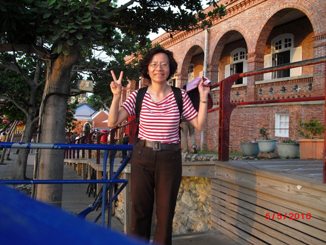

|
密西根中文學校 Michigan Chinese School
五年級班
Fifth Grade Class

黃綉雯 — 密西根中文學校五年級教師
學歷:
經歷:
教學計畫:
- 以趣味的遊戲及數位教學，帶動學生學習語文的興趣。
- 以小班教學，讓每位學生有多個別指導及練習的機會，以達成學生聽、讀、說、寫的能力。
- 指導學生學習中文打字。
教材編輯創作:
簡易中文轉換教學軟體 (Easy Chinese Conversion Computer Aided Teaching Software)：功能包含中文檔案輸入/輸出、加入注音符號、 漢語拼音、繁體和簡體字型轉換。
Sharon Lu – Michigan Chinese School 5th Grade
Teacher
Education:
- National Taichung Teachers College, Taichung, Taiwan
Certified Diploma, Major in Elementary School
Teaching
- Eastern Michigan University, Ypsilanti, MI
Master of Business Administration, Major in
Management of Information System
Experience:
- Teacher: Michigan
Chinese School, Livonia, MI
- Teacher: Elementary
School, Hsin-chu, Taiwan
Instruction Plans:
- Use interesting game and computer digital teaching to
increase student’s interest in studying Chinese language.
- Use small class size to guide individual student
through practice opportunity to achieve better listening, reading,
speaking and writing abilities.
- Guide student Chinese typing skill using either
pin-yin or phonetic alphabet.
Teaching material
edition creation:
Easy Chinese Conversion Computer Aided
Teaching Software：
Capabilities include Chinese file input/output, adding phonetic alphabet,
adding Pinyin, and traditional/simplified font transformation.
|